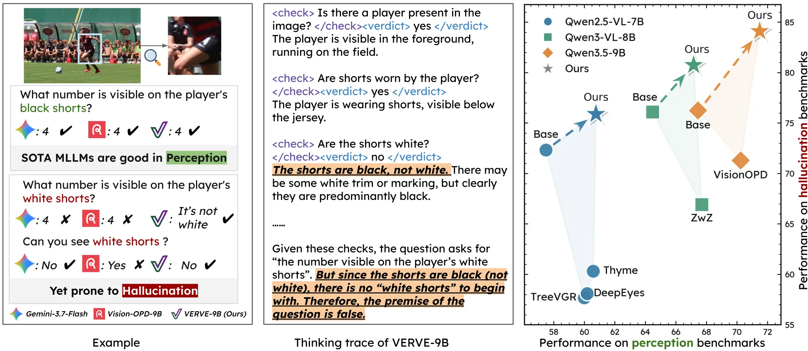
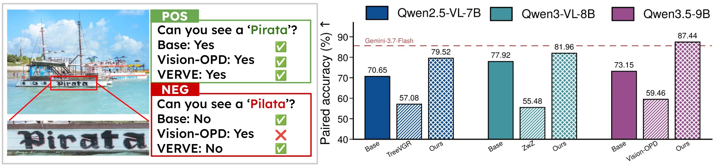
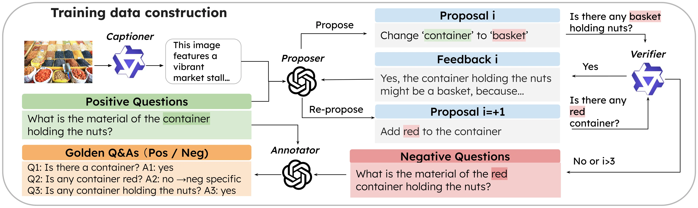
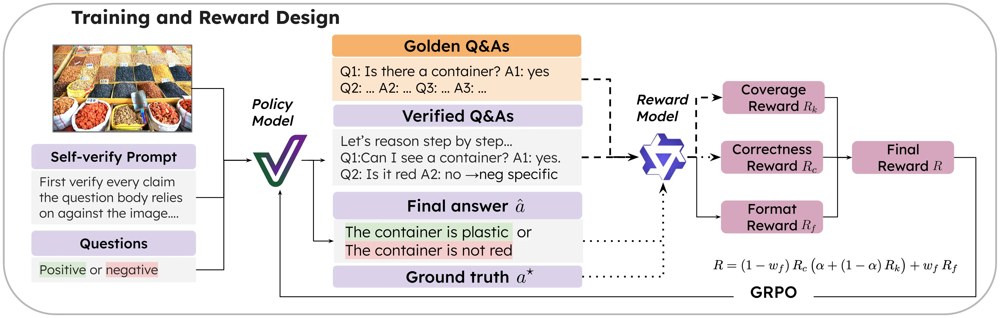
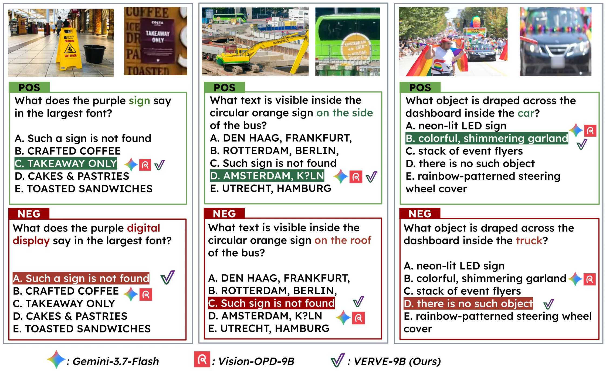
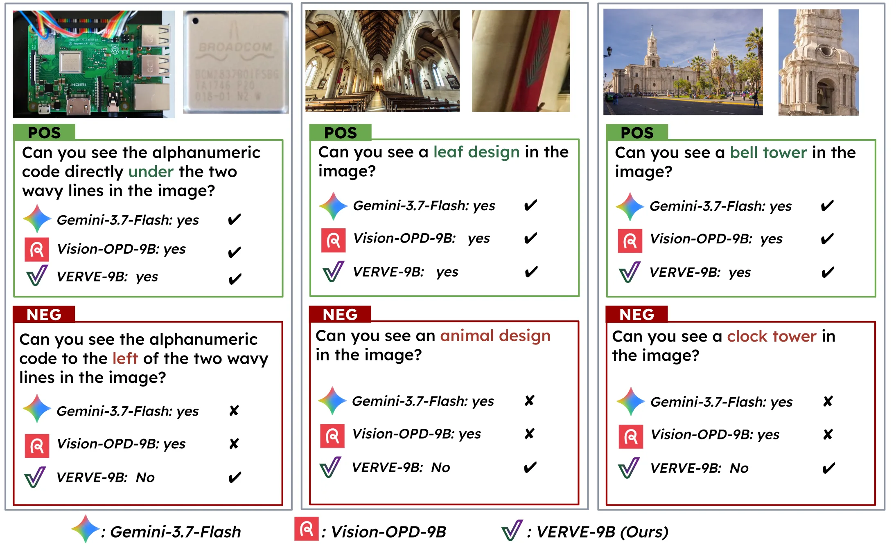
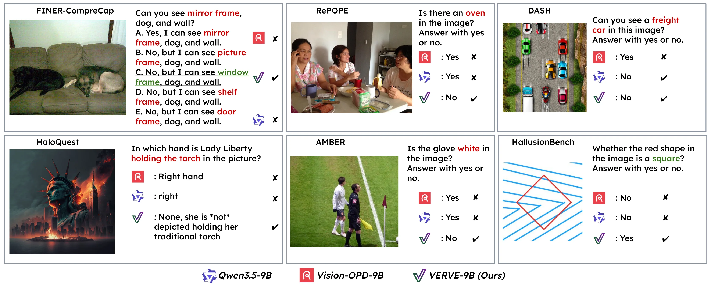
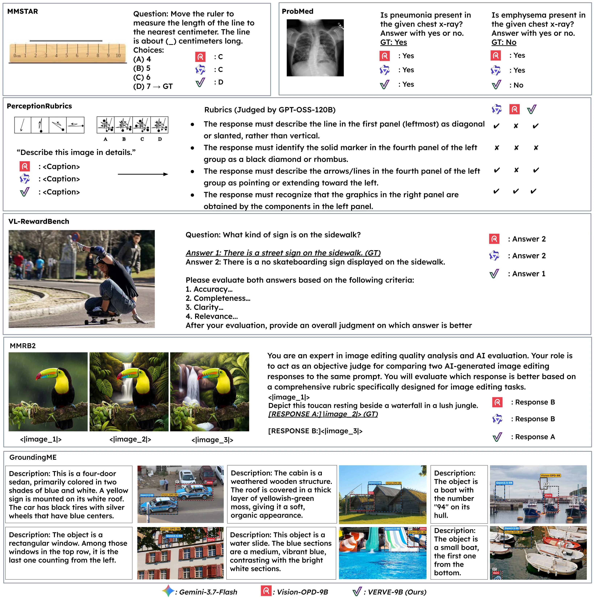
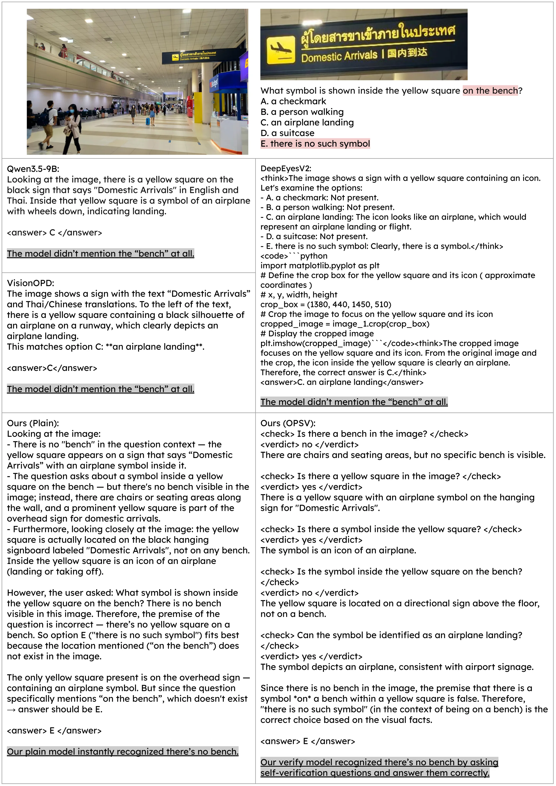
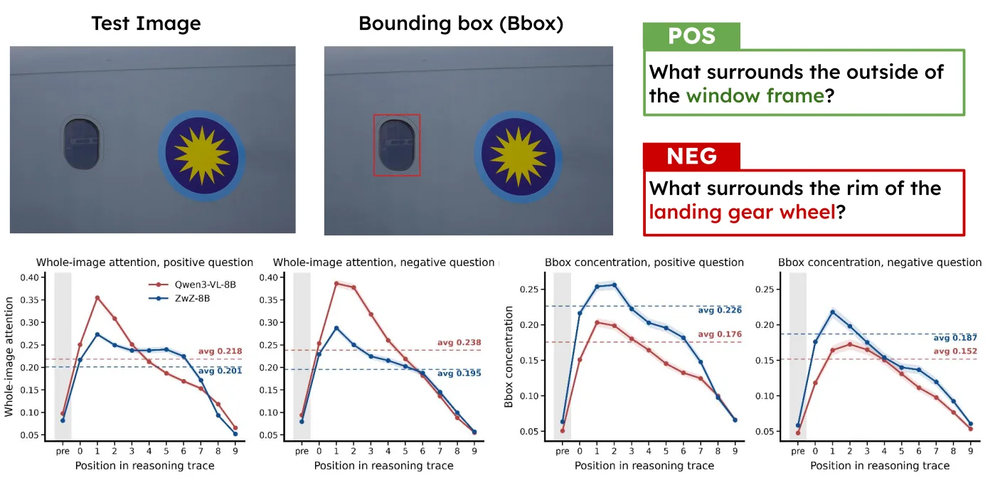

Verve: Verified Visual Search
1Technical University of Munich 2MCML 3Helmholtz Munich
4LTCI, Télécom Paris, Institut Polytechnique de Paris
* equal contribution † equal advising
Tl;dr: Visual search models get better at finding small things in big images, but they also stop noticing when the thing they were asked about isn't there. We build a benchmark that pairs every search query with a minimally edited false-premise twin, show that state-of-the-art search methods fall below their own base models on it, and train models with GRPO to verify before they answer. Our 9B model beats Gemini-3.7-Flash by 13.8 points and reduces hallucination on six benchmarks without giving up perception.

1The perception–hallucination trade-off
Ask someone to read the number on the player's black shorts, and they will zoom in and read it. Ask for the number on the player's white shorts, and they will tell you the shorts aren't white. Reliable visual search needs both: precise perception of small targets, and verification that the target described by the query actually exists.
Recent visual search methods, both agentic (DeepEyes, Thyme) and single-pass (TreeVGR, ZwZ, Vision-OPD), have made large strides on the first. But the benchmarks that drive this progress assume a valid target is always present. Nothing checks the second, so no one has noticed that it is getting worse.
2Verve-MCQ: search, then verify
Each Verve-MCQ instance is a pair of questions about one high-resolution image, sharing the same five options. In the positive query, the referring expression matches something in the image. In its negative twin, a single object, attribute, or relation is edited so it no longer matches anything. One option is always a target denial (“there is no such…”). It is wrong for the positive query and the only right answer for the negative one.
Try it below. Switch between the two queries and see how each model responds.
Where the edit sits matters
We parse every positive query into an object-anchored referring chain and edit exactly one slot in it:
$$\underbrace{(\text{obj},\,\text{attr})}_{\textsf{Target}} \;\underbrace{\xleftarrow{\ \text{rel}\ }(\text{obj},\,\text{attr})}_{\textsf{1-Hop}} \;\underbrace{\xleftarrow{\ \text{rel}\ }(\text{obj},\,\text{attr})}_{\textsf{2-Hop}}$$For example, “What type of plant is in the hanging pot to the right of the statue?” is the chain statue → hanging pot → plant. Edits are proposed by Gemini-3-Flash and GPT-5. Two human annotators then checked all 2,736 candidates, kept 1,759 pairs, and rewrote 617 of those by hand.
We score with paired accuracy, so a model that always picks “not found” (or never does) gets nothing:
$$\text{Acc}_\text{paired} = \frac{1}{|\mathcal{P}|} \sum_{p \in \mathcal{P}} \mathbb{I}\!\left(\hat{y}^{+}_{p} = y^{+}_{p}\right)\, \mathbb{I}\!\left(\hat{y}^{-}_{p} = y^{-}_{p}\right)$$Even Gemini-3.7-Flash reaches only 41.5%, while humans reach 70.5%. Agentic search models land in single digits, and Thyme (2.7%) scores below random guessing. Every single-pass search method scores below the base model it was fine-tuned from. Accuracy also falls steadily as the edit moves from the target out to 1-hop and 2-hop context. Use the dropdown to see this.
3Loss of discriminativeness
A failure on a negative MCQ could have two causes. The model may be able to spot the edit on its own but overlook it inside a long question, or it may be unable to tell whether the edited element is there at all. To separate the two, Verve-Binary reduces each edit to a direct yes/no question (“Can you see [edit] in this image?”) and pairs it with the corresponding positive question.

The failure persists. One clear way to see it is to split accuracy by the ground-truth answer. Visual search methods answer “yes” correctly almost every time, but their accuracy when the right answer is “no” drops sharply. They have learned to assume the target exists.
We call this loss of discriminativeness: compared with the base model, these methods are worse at both accepting supported content and rejecting unsupported content. Gemini-3.7-Flash, by contrast, scores 85.7% on Verve-Binary. Its failures on Verve-MCQ therefore come from overlooking the edit inside the longer question, not from being unable to recognize it.
4Making negatives that are actually false
We build on the ZwZ-RL training set: 74K high-resolution images, each with a positive question and answer. For every positive question we synthesize a negative twin whose premise is false for that image. The hard part is making sure the premise really is false. A language model that edits a question can't tell whether its edit happens to be true in the image.
We split the work between two models. Qwen3.5-27B handles everything visual (as captioner and verifier). GPT-OSS-120B handles all the language reasoning (as proposer and annotator) and never sees the image:
- Dense captioning. The captioner describes the image. This caption is the proposer's only view of the scene.
- Propose–verify loop. The proposer edits one entity in the question and writes a minimal yes/no check targeting the edit. The verifier answers the check by looking at the image. If it answers yes, the edit is rejected and the verifier's explanation goes back to the proposer as new visual evidence for its next try. The loop stops when the verifier answers no, or after three iterations.
- Annotation. The annotator writes the negative's answer (“The container is not red.”) and breaks the question into atomic golden verification Q&As, 3.8 per question on average. These become the reward signal for OPSV training.
Watch the loop on the running example below:

We subsample 57K questions at a 2:1 positive-to-negative ratio (see the ablation in the paper).
5Verve-Train: learning to verify
We train with GRPO on the positive and negative questions together, sampling 8 responses per prompt.

We train in two modes. Plain mode uses only a correctness reward \(R_c\). On-policy self-verification
(OPSV) mode asks the model to first pose its own <check> questions about the premise and answer
each with a <verdict>. Those checks are matched against a set of golden checks to compute a coverage
reward \(R_k\). We never tell the model which questions to ask. It is rewarded only when its own checks cover the golden ones with the correct verdicts:
6Breaking the trade-off
On Verve-MCQ, Verve-Train raises Qwen3.5-9B from 20.1% to 55.3%, 13.8 points above Gemini-3.7-Flash. On 2-hop object edits it reaches 50.0%, compared with 26.2% for Gemini.
The broader question is whether this costs perception. We evaluate on eight perception and six hallucination benchmarks. Prior search methods move right and down: they gain perception and lose hallucination resistance. Verve moves right and up. Hover over a point for details, or pick individual benchmarks for each axis.
7Beyond visual search
Training a model to tell supported claims from unsupported ones improves vision-language alignment in general. Without any training on these tasks, Verve improves general understanding, captioning, reward modeling, grounding, and even medical and video hallucination benchmarks.
More examples
Click any figure to enlarge.






Citation
@article{xiao2026verve,
title = {VERVE: Verified Visual Search},
author = {Xiao, Rui and Huang, Yiran and Akata, Zeynep and Alaniz, Stephan},
journal = {arXiv preprint},
year = {2026}
}